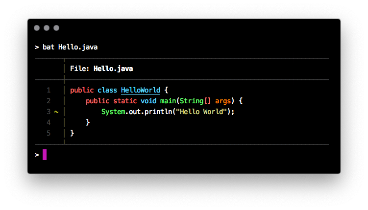
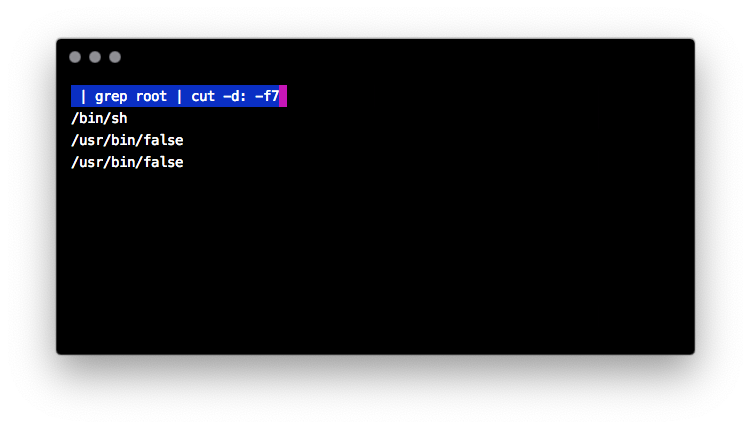
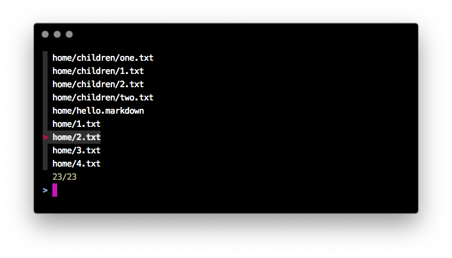

Na zimu sa treba zahriať pri termináli! Štyri utility v tom pomôžu:
bat— akocat, ale s krídlami.up— interaktívny budovateľ a vyhodnocovateľ rúr, pájp, či kolónfzf— interaktívny fuzzy vyhľadávač všetkého — súborov, procesov a mnohého!
Nástroje sú dostupné pre akýkoľvek linuxoidný operačný systém a pre každý shell.
cat s farbami
cat je ako Lada — dokonalý už od začiatku: jednoducho vypľuje dáta z rúry / súboru bez zmeny.
brew install bat
bat je mačka s krídlami, teda netopier, ktorý je:
- farebný
- číslujúci riadky
- podporujúci Git a stavy jednotlivých riadkov

Netopier dokáže zobrazovať aj biele miesto, stačí dodať parameter -A.
Okrem toho fungujú všelijaké užitočné parametre:
—line-range 3:3zobrazí len rozsah riadkov — v tomto prípade od tretieho po tretí.-themezmení tému pre zvýrazňovanie syntaxe-pvypne všetky dekorácie a nechá len rýdze — ale farebné — riadky textu
up — interaktívne obzeranie dát v rúre
up má dosť mätúci názov, ale universal plumber, teda mnohoúčelový klampiar má s funkcionalitou spoločné asi toľko, ako mačka s výpisom súborov.
V tomto prípade ide o interaktívny vyhodnocovač príkazov v rúre, užitočný najmä pre vodičov v zácviku
brew install up
Stačí doňho poslať nejaké dáta:
cat /etc/passwd | up

A potom stačí už len uvádzať príkazy presne tak, ako sme na to zvyknutí z príkazového riadka!
| grep root
root:*:0:0:System Administrator:/var/root:/bin/sh
daemon:*:1:1:System Services:/var/root:/usr/bin/false
_cvmsroot:*:212:212:CVMS Root:/var/empty:/usr/bin/false
Za rúrou možno uviesť príkaz, následne ENTERovať a up automaticky vyhodnotí výsledok z rúry.
| grep root | cut -d: -f1
root
daemon
_cvmsroot
Po riadku s príkazom môžeme slobodne behať, upravovať ho, enterovať a výstup sa bude okamžite aktualizovať.
Ak ukončíme príkaz pomocou Ctrl-X, up dokonca posledný príkaz utešene zapíše do shellskriptového súboru, ktorým ho môžeme zavolať.
Krása!
fzf — interaktívny fuzzy vyhľadávač
fzf je interaktívny vyhľadávač v riadkoch zo vstupu. Niečo ako kombinácia grepu a ručného výberu položiek pomocou klávesnice. Okrem toho je to množstvo ďalších funkcií!
- fuzzy vyhľadávanie – už si netreba pamätať presný názov súboru
- podpora farieb – až 256 rozličných variantov
- výber z riadkov poskytovaných ľubovoľným linuxovým nástrojom!
- výber jednej alebo viacerých položiek úplne zadarmo!
- automatické dopĺňanie súborov, PIDov a SSH hostiteľov pre všetky bežné shelly!
brew install fzf
Vyhľadávanie v aktuálnom adresári je najjednoduchšie:
fzf
fzf nájde súbory a adresáre v celom podstrome aktuálneho adresára a vypíše ich do riadkov. Pomocou klávesnice (šípky hore/dole) a Enteru možno vybrať aktuálnu položku a voilá! objaví sa na štandardnom výstupe.
Okrem toho možno písať ľubovoľný text a tým filtrovať položky. fzf je fuzzy, takže nemusíme hľadať presnú zhodu, stačí sa približne trafiť a prípadne kurzorom doladiť výsledok.

Dokonca funguje aj viacnásobný výber!
fzf -m
Tabulátorom vyznačíme položky a po odENTERovaní sa zjaví výsledok!
Funguje aj spolupráca s akýmkoľvej linuxovým príkazom. Chceme interaktívne vybrať súbor na úpravu?
vim `fzf`
Parameter pre vim sa vyberie klávesnicou!
Ak je nainštalovaná podpora pre automatické dopĺňanie pre bash, zsh, či fish, funguje nádherný dvojhviezdičkový trik. Dve hviezdičky a následný TABulátor vyvolajú fzf a umožnia tým vybrať argument.
ls **[TAB]
Dopĺňanie v shelli funguje pre súbory/adresáre, SSH hostiteľov, identifikátory procesov v kille a premenné prostredia!
Samozrejme, fzf funguje pre akýkoľvek filter. Chcete interaktívne vybrať zoznam používateľov z /etc/passwd?
< /etc/passwd fzf -m
Okrem toho je možné zapnúť mapovanie klávesov (key bindings)
- pre shell, kde pár klávesami priamo zabudujeme
fzfdo promptu - pre príkaz, kde možno definovať ľubovoľnú skratku pre akýkoľvek príkaz nad položkou